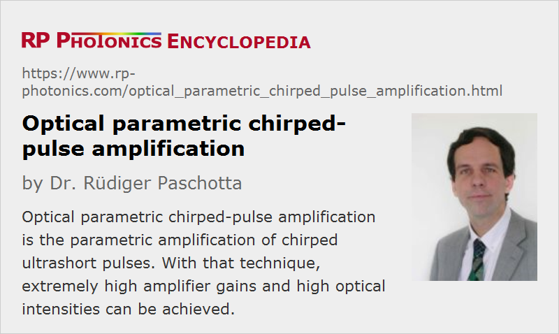

Optical Parametric Chirped-pulse Amplification
Acronym: OPCPA
Definition: parametric amplification of chirped ultrashort pulses
Categories: light pulses, methods
How to cite the article; suggest additional literature
Author: Dr. Rüdiger Paschotta
The concept of chirped-pulse amplification was originally developed for the amplification of ultrashort pulses with laser amplifiers, but it was soon realized that it is also very suitable for optical parametric amplifiers (OPAs). At high pulse energies, these also profit from a strong reduction in the peak intensities by amplifying temporally stretched (chirped) pulses. Stretching to chirped signal pulse durations of the order of 1 ns makes it possible to apply much higher pump energies and therefore to obtain much higher amplified pulse energies. Furthermore, one no longer needs ultrashort pump pulses, but can rather resort to powerful and comparatively simple Q-switched lasers as pump sources in the nanosecond regime. (Note that a parametric amplifier, in contrast to a laser amplifier, requires pump pulses with durations similar to those of the signal pulses, because there is no energy storage in the gain medium.)
Advantages of the OPCPA Concept
Compared with classical chirped-pulse amplification based on laser gain media, OPCPA has a number of important advantages:
- The parametric gain within a single pass through a nonlinear crystal can be many tens of decibels, so that OPCPA systems require fewer amplification stages (often just one), usually do not involve complicated multipass geometries, and can thus be built with much simpler and more compact setups.
- Parametric amplification is possible in a wide range of wavelengths. (Note, however, that an ultrabroad gain bandwidth is achieved only under certain phase-matching conditions.)
- With optimized phase-matching conditions, the gain bandwidth can be very large, allowing very short (few-femtosecond) high-energy pulses to be generated.
- Thermal effects in the amplifier crystal, such as thermal lensing, are much weaker than in a laser amplifier, since there is only a small amount of heating due to weak parasitic absorption. This together with the very high quantum efficiency allows for scaling to very high energy and peak power levels, and also to a high beam quality of the amplified pulses.
- Sometimes the generated idler wave can also be used.
- As the parametric gain occurs only within the duration of the pump pulse, one avoids the problems of power losses by amplified spontaneous emission in high-gain laser amplifiers and can easily generate high-energy pulses with very high intensity contrast, i.e. with a very low level of power before the actual pulse.
On the other hand, disadvantages of the OPCPA concept (compared with classical CPA with laser amplifiers) are
- the requirement to match the pump and signal pulse durations, and to synchronize seed and pump laser
- the requirement for a high pump beam quality
- the limited aperture of most available nonlinear crystals
- the complicated details of phase-matching issues
Terawatt and Petawatt Peak Powers
Some large laser facilities, which originally started with more traditional chirped-pulse amplification, have adopted the OPCPA technique for achieving extremely high peak powers [6, 7, 14–16]. Such systems employ at least two amplification stages, with a preamplifier typically based on a borate crystal (BBO or LBO), whereas KDP is used for the final amplifier stage because of the possibility to fabricate KDP crystals with very large useful apertures. A titanium–sapphire laser can serve as the seed source, and high-energy frequency-doubled Q-switched lasers generate the pump pulses. In some cases, a laser amplifier (with moderate gain) is used for the last amplifier stage, but all-parametric systems are also under investigation. The latter already reach peak powers of hundreds of terawatts [17], and it is expected that multi-petawatt peak powers will be reached soon.
Few-cycle Pulse Amplification
The largest amplification bandwidth can be reached with certain noncollinear phase-matching schemes, based on, e.g., a BBO amplifier crystal pumped with few-picosecond pulses from a frequency-doubled mode-locked titanium–sapphire laser. The term noncollinear optical parametric amplifier (NOPA) has been coined. Compared with the above-mentioned high-energy systems, NOPAs typically operate with a relatively short interaction length, much shorter pump pulses and correspondingly lower amplified pulse energies, but reach compressed pulse durations in the few-cycle regime down to ≈ 4–5 femtoseconds. For simplicity, the seed pulse can be taken from a supercontinuum derived from the pump laser itself, avoiding the need to synchronize a separate seed laser with the pump laser.
A range of interesting concepts are currently being explored in this domain. For example, there is the idea of wideband phase matching (“achromatic phase matching”) by angularly dispersing the signal beam such that each frequency component of the signal is properly phase-matched. Similar effects are achieved with tilting of the pulse fronts in the amplifier crystal (pulse front matched geometry); even in a collinear geometry, this allows for a very large phase-matching bandwidth [2, 5]. Wavelength tuning, which makes such systems very interesting for various scientific applications, is sometimes possible in a relatively wide range. Another important issue is the precise optimization of stretcher/compressor setups [9].
Compact Systems
The use of highly nonlinear quasi-phase-matched crystals allows for very high gains with moderate pump pulse energies. Although such systems typically generate pulses with durations of hundreds of femtoseconds and energies of microjoules or up to a few millijoules, these performance values are sufficient for a wide range of applications, and such systems can be made very compact and efficient.
Suppliers
The RP Photonics Buyer's Guide contains 8 suppliers for optical parametric chirped-pulse amplifiers. Among them:
Questions and Comments from Users
Here you can submit questions and comments. As far as they get accepted by the author, they will appear above this paragraph together with the author’s answer. The author will decide on acceptance based on certain criteria. Essentially, the issue must be of sufficiently broad interest.
Please do not enter personal data here; we would otherwise delete it soon. (See also our privacy declaration.) If you wish to receive personal feedback or consultancy from the author, please contact him e.g. via e-mail.
By submitting the information, you give your consent to the potential publication of your inputs on our website according to our rules. (If you later retract your consent, we will delete those inputs.) As your inputs are first reviewed by the author, they may be published with some delay.
Bibliography
| [1] | A. Dubietis et al., “Powerful femtosecond pulse generation by chirped and stretched pulse parametric amplification in BBO crystal”, Opt. Commun. 88, 433 (1992), doi:10.1016/0030-4018(92)90070-8 |
| [2] | R. Danielius et al., “Matching of group velocities by spatial walk-off in collinear three-wave interaction with tilted pulses”, Opt. Lett. 21 (13), 973 (1996), doi:10.1364/OL.21.000973 |
| [3] | I. N. Ross et al., “The prospects for ultrashort pulse duration and ultrahigh intensity using optical parametric chirped pulse amplifiers”, Opt. Commun. 144, 125 (1997), doi:10.1016/S0030-4018(97)00399-4 |
| [4] | T. Wilhelm et al., “Sub-20-fs pulses tunable across the visible from a blue-pumped single-pass noncollinear parametric converter”, Opt. Lett. 22 (19), 1494 (1997), doi:10.1364/OL.22.001494 |
| [5] | R. Danielius et al., “A collinearly phase-matched parametric generator/amplifier of visible femtosecond pulses”, IEEE J. Quantum Electron. 34 (3), 459 (1998), doi:10.1109/3.661453 |
| [6] | I. N. Ross et al., “Generation of terawatt pulses by use of optical parametric chirped pulse amplification”, Appl. Opt. 39 (15), 2422 (2000), doi:10.1364/AO.39.002422 |
| [7] | X. Yang et al., “Multiterawatt laser system based on optical parametric chirped pulse amplification”, Opt. Lett. 27 (13), 1135 (2002), doi:10.1364/OL.27.001135 |
| [8] | T. Kobayashi and A. Baltuška, “Sub-5 fs pulse generation from a noncollinear optical parametric amplifier”, Meas. Sci. Technol. 13, 1671 (2002), doi:10.1088/0957-0233/13/11/303 |
| [9] | A. Baltuška et al., “Visible pulse compression to 4 fs by optical parametric amplification and programmable dispersion control”, Opt. Lett. 27 (5), 306 (2002), doi:10.1364/OL.27.000306 |
| [10] | G. Arisholm et al., “Ultra-broadband chirped-pulse optical parametric amplifier with angularly dispersed beams”, Opt. Express 12 (3), 518 (2004), doi:10.1364/OPEX.12.000518 |
| [11] | R. Butkus et al., “Progress in chirped pulse optical parametric amplifiers”, Appl. Phys. B 79, 693 (2004), doi:10.1007/s00340-004-1614-3 |
| [12] | G. Kurdi et al., “Optical parametric amplification of femtosecond ultraviolet laser pulses”, J. Sel. Top. Quantum Electron. 10 (6), 1259 (2004), doi:10.1109/JSTQE.2004.837706 |
| [13] | J.-C. Wang and J.-K. Wang, “Experimental and theoretical analysis of white light seeded, collinear phase-matching, femtosecond optical parametric amplifiers”, J. Opt. Soc. Am. B 21 (1), 45 (2004), doi:10.1364/JOSAB.21.000045 |
| [14] | Y. Kitagawa et al., “Prepulse-free petawatt laser for a fast ignitor”, IEEE J. Quantum Electron. 40 (3), 281 (2004), doi:10.1109/JQE.2003.823043 |
| [15] | C. N. Danson et al., “Vulcan petawatt: design, operation, and interactions at 5 × 1020 W cm−2”, Laser Part. Beams 23, 87 (2005), doi:10.1017/S0263034605050159 |
| [16] | L. J. Waxer et al., “High-energy petawatt capability for the Omega laser”, Opt. Photon. News 16 (7), 30 (2005), doi:10.1364/OPN.16.7.000030 |
| [17] | V. V. Lozhkarev et al., “200 TW 45 fs laser based on optical parametric chirped pulse amplification”, Opt. Express 14 (1), 446 (2006), doi:10.1364/OPEX.14.000446 |
| [18] | F. Ö. Ilday and F. X. Kärtner, “Cavity-enhanced optical parametric chirped-pulse amplification”, Opt. Lett. 31 (5), 637 (2006), doi:10.1364/OL.31.000637 |
| [19] | A. Dubietis et al., “Trends in chirped pulse optical parametric amplification”, J. Sel. Top. Quantum Electron. 12 (2), 163 (2006), doi:10.1109/JSTQE.2006.871962 |
| [20] | F. Tavella et al., “Dispersion management for a sub-10-fs, 10 TW optical parametric chirped-pulse amplifier”, Opt. Lett. 32 (15), 2227 (2007), doi:10.1364/OL.32.002227 |
| [21] | S. Adachi et al., “5-fs, multi-mJ, CEP-locked parametric chirped-pulse amplifier pumped by a 450-nm source at 1 kHz”, Opt. Express 16 (19), 14341 (2008), doi:10.1364/OE.16.014341 |
| [22] | J. Rothhardt et al., “High average and peak power few-cycle laser pulses delivered by fiber pumped OPCPA system”, Opt. Express 18 (12), 12719 (2010), doi:10.1364/OE.18.012719 |
| [23] | C. Caucheteur et al., “Experimental demonstration of optical parametric chirped pulse amplification in optical fiber”, Opt. Lett. 35 (11), 1786 (2010), doi:10.1364/OL.35.001786 |
| [24] | S. Witte and K. S. E. Eikema, “Ultrafast optical parametric chirped-pulse amplification”, J. Sel. Top. Quantum Electron. 18 (1), 296 (2012), doi:10.1109/JSTQE.2011.2118370 |
| [25] | D. E. Rivas et al., “Next generation driver for attosecond and laser-plasma physics”, Nature Sci. Rep. 7, article 5224 (2017), doi:10.1038/s41598-017-05082-w |
| [26] | W. Fu and F. W. Wise, “Normal-dispersion fiber optical parametric chirped-pulse amplification”, Opt. Lett. 43 (21), 5331 (2018), doi:10.1364/OL.43.005331 |
See also: chirped-pulse amplification, optical parametric amplifiers, optical amplifiers, chromatic dispersion, nonlinearities, ultrashort pulses, pulse compression
and other articles in the categories light pulses, methods
|  |
If you like this page, please share the link with your friends and colleagues, e.g. via social media:
These sharing buttons are implemented in a privacy-friendly way!